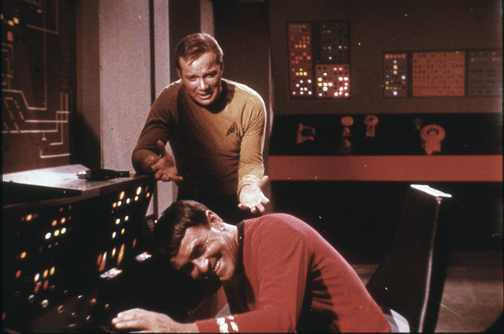

Star Trek
Teaching Tolerance
Since the beginning, Star Trek has been known to shine a light on current humanitarian issues. From the first televised interracial kiss to the inclusion of non-tokenized gay and lesbian characters, Star Trek has been pushing the boundries of society to show us that we have more in common than we may think. Trek has spent decades discussing issues of race, religion, sexuality, gender, and class differentials. Promoting the idea of respect, acceptance, and tolerance has been central to every iteration of Star Trek.

A Hopeful Future
Taking place anywhere from a few decades to an entire millenium in the future, Star Trek demonstrates the ways in which we can cooperate and thrive. Most of the shows take place within the Federation, years after a need for money. In this idealistic future, sentient beings are allowed to work and live in environments best suited to their interests and talents. All basic needs are met. Later, we see this starkly contrasted with non-Federation and pre/post-Federation cultures in which people are competeing for resources and finances in a way similar to modern humanity. Highlighting the benefits of Gene Roddenberry's ideal future, and providing examples of things we can do to achieve this future, Star Trek motivates fans to hope for a brighter tomorrow.

Approachability
Being a long-time fan provides certain benefits in understanding references between series, but anyone can watch Star Trek at any time and enjoy it without feeling lost. Especially in the first four series, when storylines were almost entirely episodic and self contained, anyone could turn on the TV and watch aliens learn important moral lessons without those morals getting in the way of entertainment. Later on, Star Trek was brought to the mainstream media with the J.J Abrams movies bridging a gap between science, action, and drama in a way never before seen. Star Trek can appeal to anyone and there's no wrong way to start watching.

Click Here to go to the biggest Star Trek fandom page to see more.